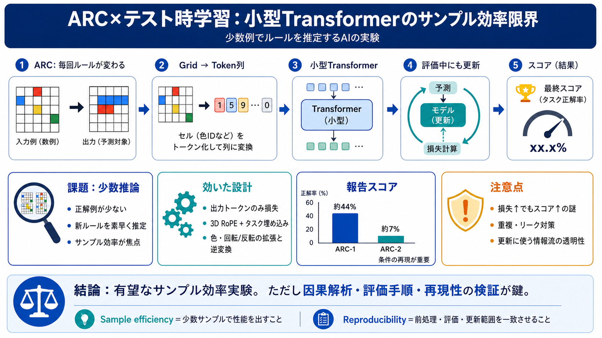

44% on ARC-AGI-1 in 67 cents - Mithil Vakde’s Homepage
Way fewer augmentations (more sample efficient!) AdamW -> Normuon flash attention with varlen training + flex attentio…

入力グリッド→出力グリッドを解くARCで、小型Transformerを「評価中にも学習させる」設計により、少数例での高スコアを狙う取り組みです（効率の検証が主目的）。
ARCは各パズルでルールが変わるため、trainでは得た仕組みから少数の例で新ルールを推定する力（meta-learning）が問われます。
入力出力グリッドをトークン列に変換し、小型Transformerで「タスク条件つきに変換規則」を学習・推定します。
Transformerを小規模に訓練し、テスト時学習を入れることで、ARC-1文脈で約44%前後、さらにARC-2で約7%を達成したと報告されています。
ベースライン改善は複数要素の積み上げで、Transformer近代化・データ多様性・層数増に加え、特に効率面で拡張回数を減らす方向が強調されています。
大きな変更として「入力トークンは学習対象から外し、出力トークンの損失だけで学習」する方針が採用されたとされます。
アブレーションでは、3D RoPEやタスク埋め込みを外すとスコアが大きく落ちる一方、保持することで高いベースラインが得られたと報告されています。
推論時の対称性（色やダイヘドラル変換）に対応するデータ拡張・逆変換を組み込み、誤差を抑えながら候補生成を安定化させる狙いがあります。
出力損失のみへ変更したことで、テスト損失は悪化したのにスコアが上がる現象が報告されています。
ARC-2にはARC-1の重複が含まれるため、無防備に学習へ混ぜると記憶でスコアが出てしまうリスクがあります。
テスト時学習は「テストの正解ラベルを事前に知る」ことを禁止する競技趣旨との境界が焦点になります。
この報告はサンプル効率へ寄せた強い実験として価値が大きい一方、因果の切り分け（成功/失敗、損失とスコアの関係、情報流）には追加検証が望まれます。
Way fewer augmentations (more sample efficient!) AdamW -> Normuon flash attention with varlen training + flex attentio…
I implement this by expanding the loss function to include the input tokens. This is not something new. Its the exact pr…
runtimebrt He beat OpenAI on ARC-AGI-1. An independent AI researcher, Mithil Vakde, has built an AI model that ach…
here right you have like these decoding layers and this softmax layers so like it's it's nothing kind of outlandish u bu…
December 23 session where we have the pleasure of having a chat with Mithil Vakde about his work on ARC-AGI v1 that gene…